ASP.NET Core 9 Web API ve MVC mimarisiyle geliştirilmiş, hibrit ORM entegrasyonuna ve Yapay Zeka desteğine sahip yeni nesil ilan yönetim sistemi.
Geliştirici: Sedanur Eylül Erdoğan
E-posta: sedanureylulerdogan@gmail.com
Temmuz, 2026
Bu bölümde projenin genel amacı, kapsamı ve geliştirme sürecinde uyulan mimari kısıtlar ele alınmıştır.
Bu projenin amacı; kullanıcıların gayrimenkul (konut, arsa) ve vasıta ilanlarını tek bir çatı altında toplayarak ilan ekleyebildiği, resimlerini yönetebildiği, platform içi anlık mesajlaşma ve randevu mekanizmalarıyla etkileşime girebildiği modern bir pazar yeri (marketplace) platformu oluşturmaktır. Yönetici paneli sayesinde ilanların kontrol edilip onaylanabildiği, verilerin grafiksel olarak analiz edilebildiği kurumsal düzeyde bir yazılım sunulması hedeflenmiştir.
Projenin teknik altyapısını oluşturan teknolojiler ve mimari yaklaşımlar bu başlık altında detaylandırılmıştır.
Proje, Microsoft .NET 9.0 yazılım geliştirme platformu kullanılarak geliştirilmiştir. API katmanında JSON tabanlı güvenli bir RESTful API sunulurken, MVC katmanında Razor syntax ile hazırlanan kullanıcı arayüzü Bootstrap 5 kütüphanesiyle görselleştirilmiştir. Kimlik doğrulama süreçleri ASP.NET Core Identity sistemi ile yönetilmiştir.
Veritabanı ilişkileri Entity Framework Core kullanılarak Code-First yaklaşımıyla modellenmiştir. Eşleşen tabloların (One-to-Many vb.) yönetiminde EF Core tercih edilirken; yüksek performans ve minimum gecikme süresi gerektiren Dashboard sayaçları ve dinamik istatistik raporlarında Dapper (Micro ORM) entegrasyonuyla doğrudan SQL sorguları çalıştırılmıştır.
Proje, gevşek bağlılığı (Loose Coupling) ve sürdürülebilirliği sağlamak adına Katmanlı Mimari (N-Tier) ile tasarlanmıştır. Sistemde Service-Repository-Unit of Work desenleri uygulanmıştır. Veri okuma işlemlerini hızlandırmak amacıyla RAM önbelleği (IMemoryCache) ve veri yazıldığında belleği güncel tutan Cache Eviction mantığı kurulmuştur.
Veritabanı bağlantısı RealEstateVehiclePlatform.EfApi/appsettings.json dosyası üzerinden yerel SQL LocalDB sunucusuna bağlanacak şekilde yapılandırılmıştır:
"ConnectionStrings": {
"SqlConnection": "Server=(localdb)\\MSSQLLocalDB;Database=RealEstateVehiclePlatformDb;TrustServerCertificate=true;"
}Paket Yöneticisi Konsolunda (PMC) veritabanı şemasını oluşturmak ve tabloları hazırlamak için aşağıdaki komut koşturulur:
Update-DatabaseSistem ilk kez çalıştırıldığında, RoleSeedService ve AdminSeedService devreye girerek veritabanında Admin ve User rollerini ve admin@gmail.com (şifre: 123456) yöneticisini otomatik olarak kurar.
Platformun çalışabilmesi için RealEstateVehiclePlatform.EfApi ve RealEstateVehiclePlatform.WebUI projeleri Visual Studio'da eş zamanlı (Multiple Startup Projects) olarak çalıştırılır.
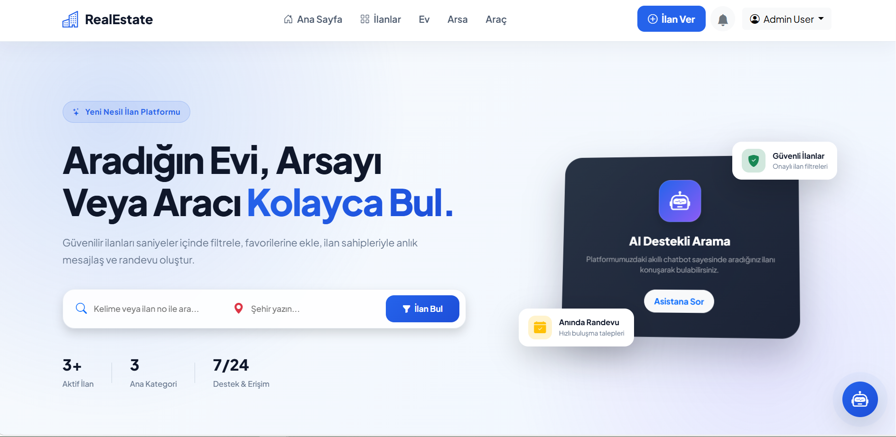
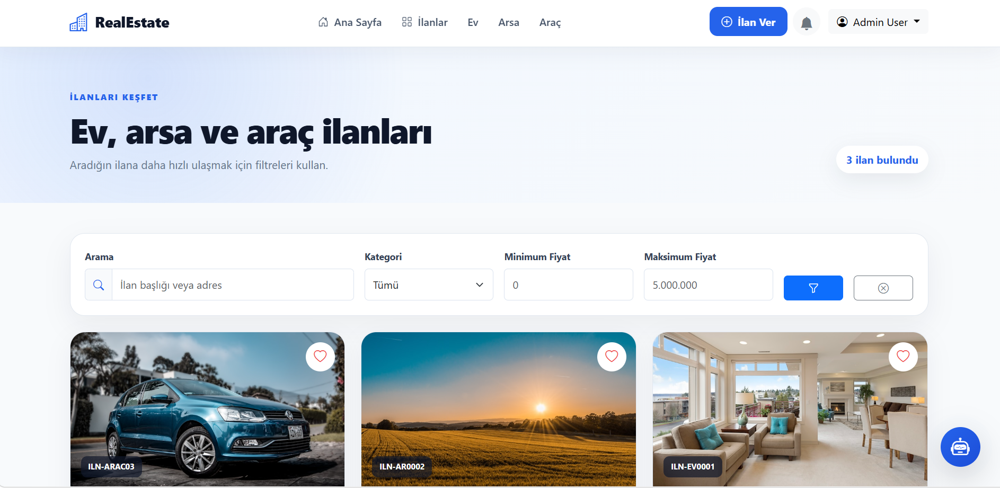
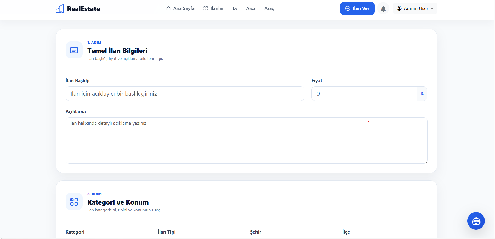
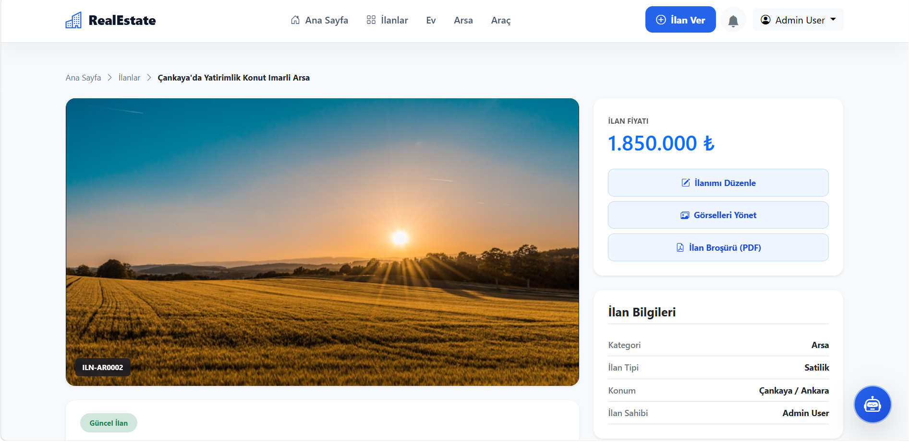
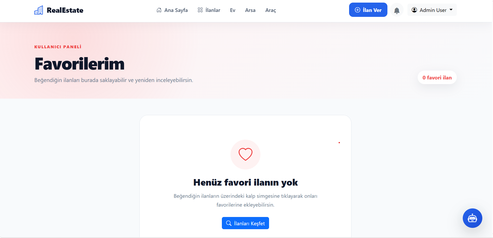
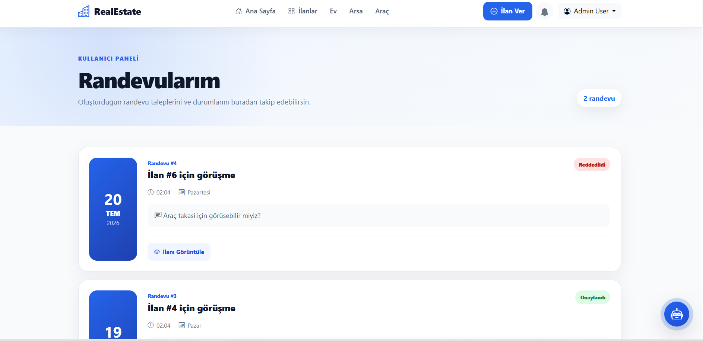
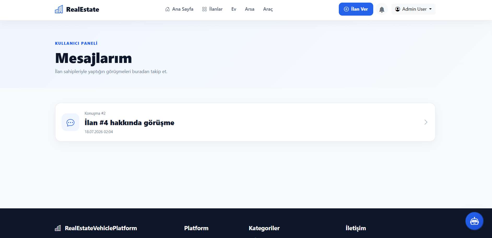
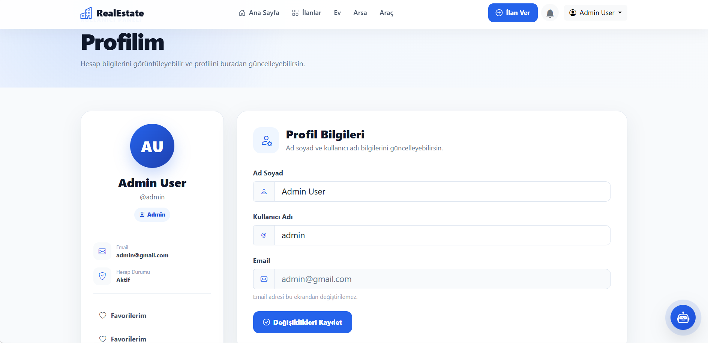
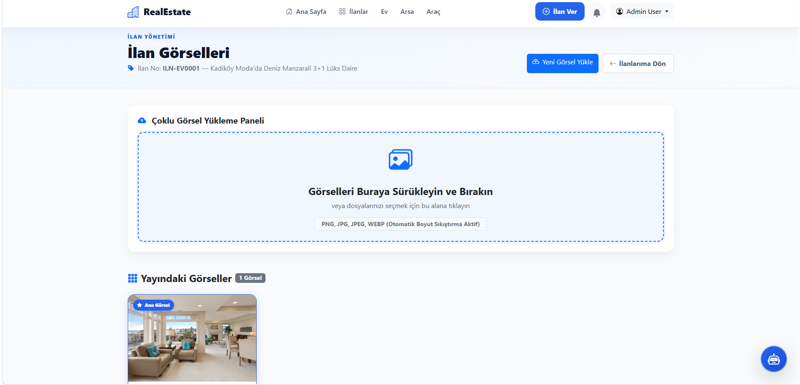
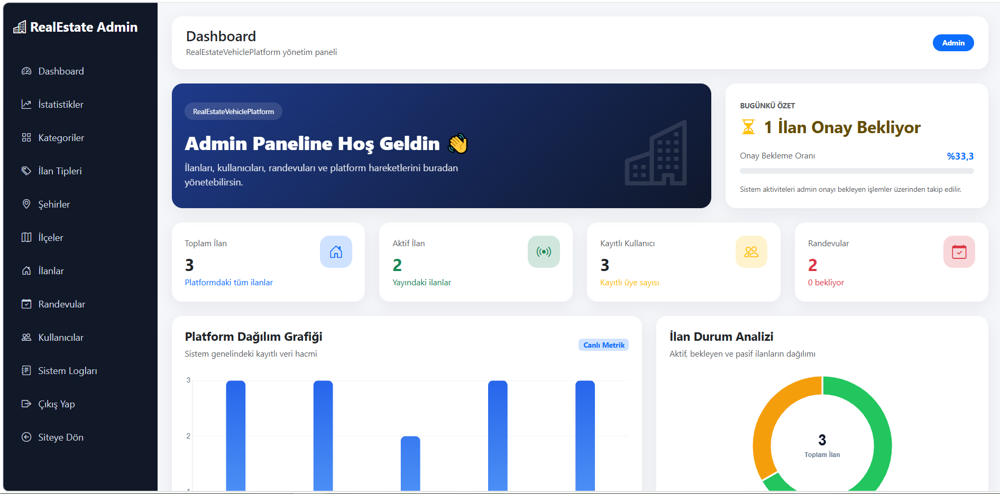
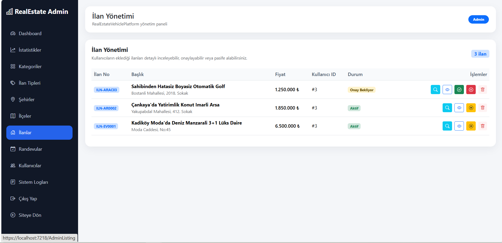
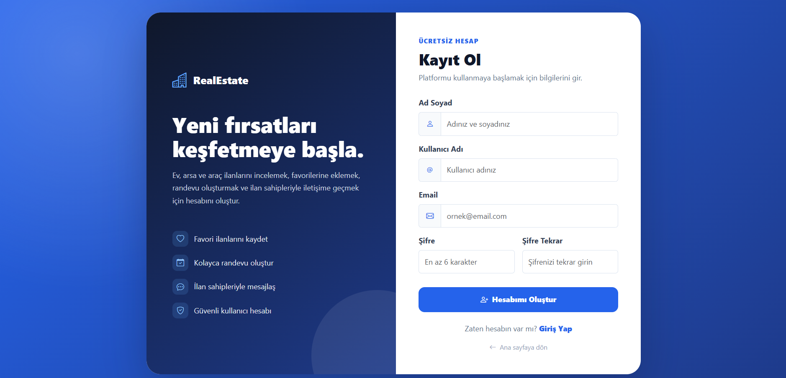
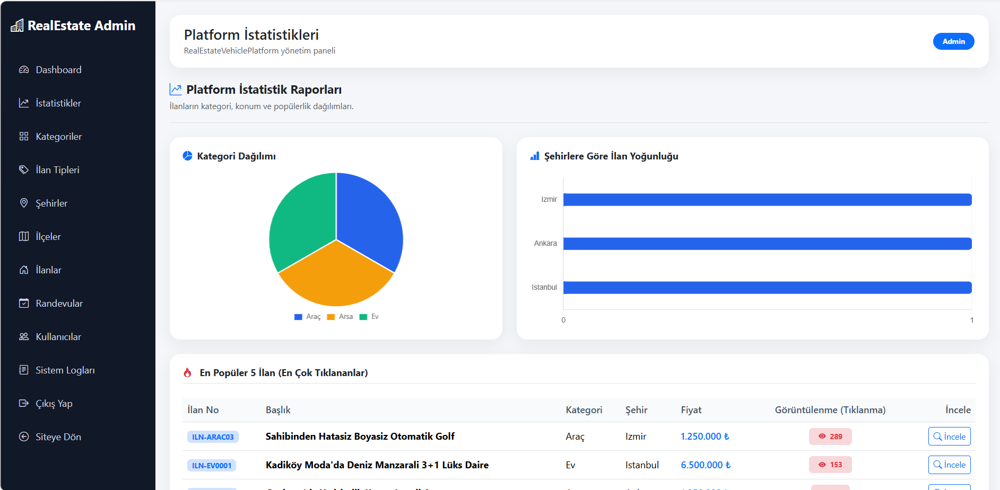
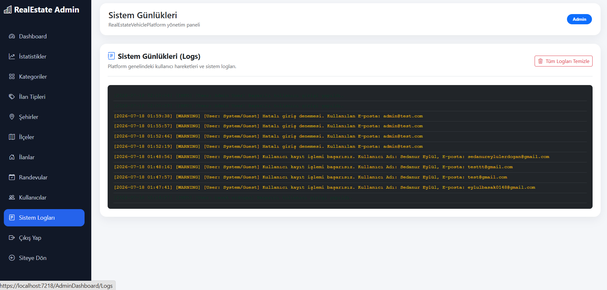
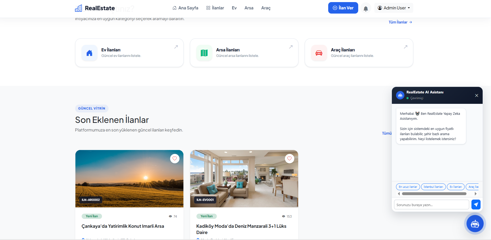
Test verileri yüklenmiş temiz veritabanında test yapabilmeniz için kimlik bilgileri:
• Admin Yöneticisi: admin@gmail.com | Şifre: 123456
• Normal Üye: user@test.com | Şifre: Password123!
Ziyaretçiler sisteme girdiğinde arka planda çalışan AJAX Polling (20 saniyede bir) mekanizması okunmamış mesajları ve randevuları süzerek zilde günceller. Yeni bir mesaj geldiğinde sağ üst köşeden SweetAlert2 Toast bildirimi akarak kullanıcı uyarılır.
İlan ekleme veya ana sayfa listeleme sırasında sürekli çağrılan Categories, Cities ve Districts listeleri RAM'de 30 dakika önbelleğe alınır. Admin panelinden yeni bir kategori silindiğinde veya eklendiğinde EvictCache tetiklenerek eski veriler RAM'den temizlenir (Cache Invalidation).
• Excel Raporlama: Admin İlanlar sayfasındaki butona tıklandığında, UTF-8 BOM kodlamasıyla hazırlanan ve Türkçe karakterleri bozmayan noktalı virgüllü ; rapor Excel formatında indirilir.
• PDF Raporlama: İlan detay sayfasındaki "İlan Broşürü (PDF)" butonu, html2pdf.js ile o ana ait görseli ve teknik özellikleri tarayıcıda dinamik olarak A4 emlak kataloğuna dönüştürür.
Admin panelindeki İstatistik sekmesinde Chart.js kütüphanesiyle çizilen dairesel Kategori Dağılımı ve yatay Şehir Yoğunluk grafikleri dinamik olarak ilan sayılarını analiz eder.
Sağ altta yer alan AI ikonu tıklandığında sohbet penceresi açılır. Kullanıcı *"en ucuz ilanları göster"*, *"İstanbul"* veya *"Ev"* yazdığında veritabanını tarayarak uygun aktif ilanları doğrudan linkleriyle birlikte listeler.
Uygulamadaki tüm login, register ve hata hareketleri LogService tarafından thread-safe (kilit korumalı) olarak system_logs.txt dosyasına yazılır. Admin panelindeki "Sistem Logları" sekmesinden bu veriler canlı konsol ekranında renklendirilmiş (INFO: yeşil, ERROR: kırmızı) olarak takip edilebilir.
Bu bitirme projesi kapsamında, modern yazılım mimarilerine uygun, katmanlar arası bağımsızlığın korunduğu kurumsal bir ilan otomasyon sistemi geliştirilmiştir. Projede Entity Framework Core Code-First yaklaşımı ile ilişkisel veritabanı kurulmuş, Dapper ile performans kritik istatistiksel raporlar çekilmiştir.
Sisteme entegre edilen istemci taraflı görsel sıkıştırma (Canvas API), sunucu taraflı güvenli dosya imzası doğrulamaları (Magic Numbers), IMemoryCache altyapısı ve otomatik önbellek geçersiz kılma mantığı sayesinde sistemin kararlı ve yüksek performanslı çalışması sağlanmıştır. Yapay Zeka destekli sohbet robotu ve dinamik grafik gösterimleriyle desteklenen modern kullanıcı arayüzü, platformun ticari bir pazar yeri uygulamasının gereksinimlerini eksiksiz karşıladığını kanıtlamaktadır.